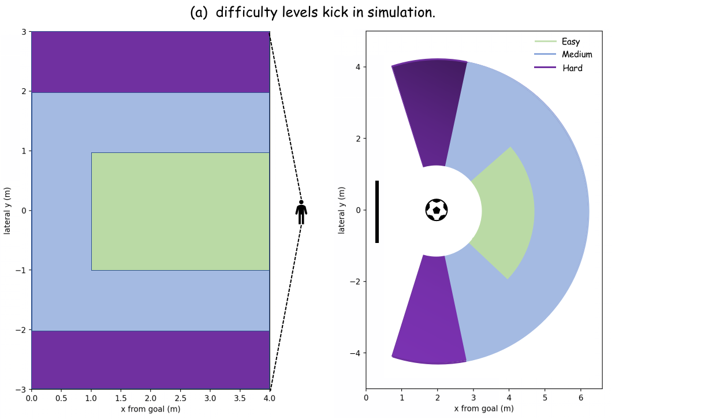

Abstract
Humanoid soccer contact skills require the robot to close the loop over perception, approach, alignment, impact, and recovery while its own motion changes the viewpoint and can hide the ball. DAVIS asks whether a humanoid can learn deployable soccer contact skills from only a head-mounted depth image, proprioceptive history, and an optional low-dimensional task command, directly outputting 25-DoF joint PD targets without external scene state, runtime perception, or planning. The framework learns visibility-aware auxiliary geometry during training and combines GT-to-prediction annealing, task curricula, and AMP-style motion priors to bridge privileged supervision and deployment. We instantiate separate shooting and directional-dribbling policies, and evaluate them in IsaacLab, on the Noetix E1, and through controlled ablations.
Video
What DAVIS enables
Depth → whole-body control
The deployed graph keeps a single 168×80 head-mounted depth frame, a five-step proprioceptive history, and an optional task variable. The actor outputs 25-DoF joint PD targets.
The head is part of the loop
The E1 has 23 body DoFs and 2 head DoFs. Learned head control changes the next depth observation and is trained jointly with locomotion and contact.
One interface, separate policies
Shooting and directional dribbling use separate checkpoints with the same depth-to-control interface; new skills change task objects, commands, rewards, and curricula.

Method
DAVIS puts structure in training rather than in a brittle deployment stack. Auxiliary geometry and visibility heads learn from privileged simulation labels, while confidence gating and GT-to-prediction annealing move the actor from stable geometric guidance to depth-derived features.

Simulation → camera
Both simulated and real depth are cropped to 168×80, clipped to 0.3–5.0 m, normalized, and zero-filled at invalid pixels.
Geometry × visibility
Ball and goal geometry are confidence-gated before entering the actor; privileged labels supervise the auxiliary heads during training.
Isaac Lab → E1
Policies train for 20,000 PPO iterations, export to ONNX, and run at 50 Hz with a 200 Hz PD loop and 15 Hz depth stream.

Skill instantiations
Goal-directed shooting
Separate shooting checkpoints handle penalty and free kicks from randomized positions. The actor receives no operator command and learns one-shot approach, alignment, and contact.
Directional dribbling
A separate checkpoint receives only a joystick direction and learns repeated contacts for target reaching, obstacle traversal, and repeated-S slalom tasks.

Results
Robot trials
Shooting records 26/38, 28/49, and 33/60 successes for Easy, Medium, and Hard settings. Dribbling records 22/28, 19/28, and 17/28 for target reaching, obstacle traversal, and slalom.
A success requires one-kick goal-line crossing for shooting, and an upright robot with both robot and ball within 1 m of the target for dribbling.


| Simulation task | Easy / N=3 | Medium / N=5 | Hard / N=7 | Total / mean |
|---|---|---|---|---|
| Penalty kick | 94.80% | 95.80% | 55.50% | 84.87% |
| Free kick | 100.00% | 88.00% | 71.00% | 85.36% |
| Repeated-S slalom | 0.71–0.77 | 0.55–0.72 | 0.43–0.68 | 0.65 over 900 trials |

What the ablations show
The full DAVIS model gives the best overall balance. Removing the auxiliary head drives success to zero; removing curriculum, annealing, geometry, supervision, visibility gating, or active vision degrades one or more shooting and dribbling metrics.
External protocol
At 1 m tolerance, DAVIS reaches 0.88 target-reaching and 0.96 obstacle-avoidance success over 50 trials per condition, compared with reported Dribble Master rates of 0.87 and 0.93.
Limitations and future work
Residual perception gap
The compact depth-only interface remains tied to one head-mounted camera and inherits occlusion, dropout, and imperfectly simulated depth. Better sensor-noise modeling and real-world fine-tuning are practical next steps.
Manual skill construction
The shared interface still requires hand-tuned rewards, curricula, and contact conditioning for every skill. Language-conditioned task specifications and automatic curricula could make new behavior construction less manual.
Appendix & Supplementary Details
The latest ICRA project includes the active appendix below. It records the deployment interface, evaluation protocols, policy and auxiliary supervision settings, task-specific rewards, sim-to-real randomization, and additional skills.
Deployment interface
Policies are trained in Isaac Lab on Isaac Sim 5.0.0 using eight NVIDIA RTX 4090D GPUs for 20,000 PPO iterations before ONNX export. The 25-dimensional action vector is preserved from training through deployment. The deployed controller uses one 168×80 aligned depth frame, proprioceptive history, and 25-DoF joint targets.
Metrics and evaluation
Success requires one-kick goal-line crossing for shooting, while dribbling requires an upright robot with both robot and ball within 1 m of the target. Simulation dribbling additionally requires visiting waypoints in order. The appendix defines success rate, valid contact ratio, angular error, velocity error, ball-in-band ratio, turn bias, and reach rate.
Observation and optimization
The actor combines the depth latent, confidence-gated ball/goal geometry, visibility signals, proprioceptive history, task command, and HIM history features. Privileged simulation labels supervise auxiliary geometry and visibility heads; GT-to-prediction annealing transfers the policy to depth-derived estimates. PPO, curriculum schedules, and a head-masked AMP prior shape training.
Goal-directed shooting and directional dribbling
Shooting covers stratified penalty-kick and free-kick initializations. Directional dribbling evaluates a repeated-S slalom over N∈{3,5,7} turns and α∈{60°,90°,120°}, with 900 trials, waypoint arrival radius 0.75 m, 5 s segment timers, and engagement-gated metrics.

Depth and physical randomization
Simulation renders a 168×94 pinhole depth image and crops it to 168×80. Both simulation and real deployment clip depth to 0.3–5.0 m, normalize as 2D/5.0−1, and zero-fill invalid pixels. Training randomizes depth noise, masks, camera intrinsics and pose, joint offsets, base mass and COM, actuator scales, ball mass, pushes, and contact dynamics.
Beyond the main benchmarks
The same depth-only interface supports a close-range powerful shot, obstacle-avoiding dribbling, and recovery after the ball leaves the field of view. Obstacle avoidance adds an indexed geometry/visibility head and an artificial-potential-field command deflection, without a separate runtime controller.

Reward and recovery details
Dribbling combines commanded progress and heading, dense re-approach, active-vision framing, body-follow-head coupling, safety/style regularization, termination penalties, and a Wasserstein AMP style reward. When the ball is invisible for 0.5 s, search and invisible-speed penalties encourage active head-and-body reacquisition while preserving the same actor interface.
Additional evidence
Appendix figures report powerful-shot behavior, auxiliary loss convergence for ball and obstacles, head ablations, foot-contact trajectories, and qualitative shooting sequences. These studies test extensibility without adding runtime perception or planning modules.
| Appendix item | Recorded setting |
|---|---|
| Depth interface | 168×80, 0.3–5.0 m, single frame, proprioceptive history |
| Training | Isaac Lab / Isaac Sim 5.0.0, 20,000 PPO iterations, ONNX export |
| Dribbling benchmark | 9 slalom tasks, 900 trials, 0.75 m waypoint radius, 5 s segment timer |
| Real-world bridge | Depth noise, masks, camera and dynamics randomization, external pushes |
BibTeX
@inproceedings{davis2027,
title={DAVIS: A Depth-Only End-to-End Active-Vision Framework for Humanoid Soccer Skills},
booktitle={IEEE International Conference on Robotics and Automation},
year={2027}
}